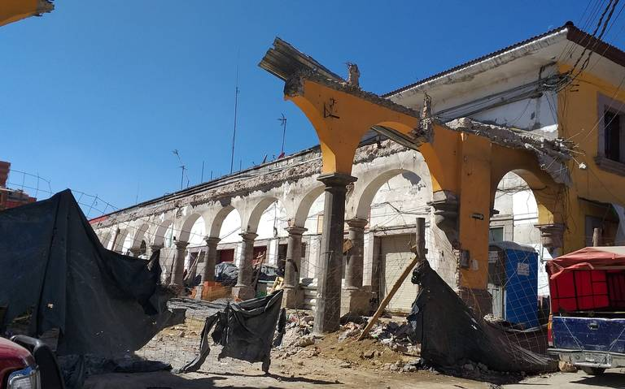
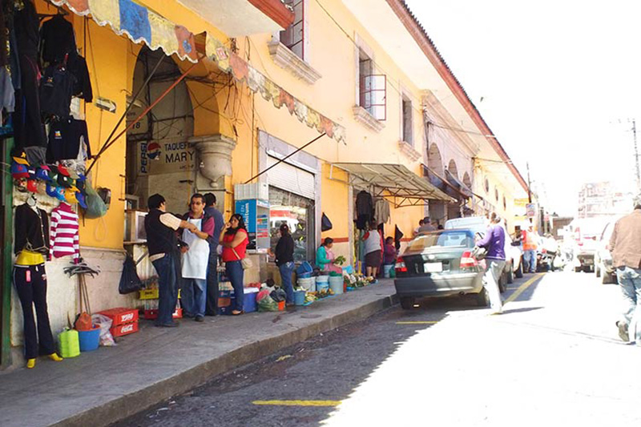
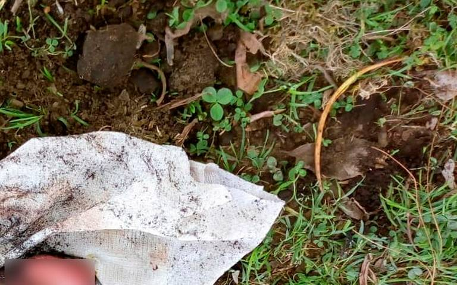

Monitorea INAH construcción de mercado en Teziutlán

El Instituto Nacional de Antropología e Historia (INAH), llevará a cabo un monitoreo de la obra que construye el Ayuntamiento en el centro histórico de Teziutlán, a un costado del palacio municipal, ello a fin de que, en caso de encontrar vestigios coloniales o arqueológicos, esto sea reportado al organismo, ello según lo declarado por Carlos Peredo Grau, presidente municipal de Teziutlán.
Lo anterior, luego de que se diera a conocer la petición que hizo el INAH, para llevar a cabo un cambio en cuanto al proyecto de remodelación que se tenía previsto en el lugar, determinando que los 170 locales comerciales que serán construidos, queden de manea subterránea, para lo cual, se habrá de llevar a cabo una excavación, a fin de realizar la construcción.
Arrojan feto atrás de un panteón en Teziutlán

TEZIUTLÁN.- En un potrero situado en la parte trasera del panteón de la comunidad de Espíritu Santo, fue hallado un feto por pobladores del lugar, quienes dieron aviso a las autoridades.
Al lugar arribaron elementos de la Policía Municipal y Protección Civil, quienes revisaron el cuerpo inerte que ya carecía de signos vitales y sin lesiones.
De acuerdo al reporte, se trataba de un producto del sexo masculino, con una longitud de aproximadamente 25 centímetro, que fue localizado en dicho potrero en un hoyo de aproximadamente 20 centímetros de profundidad, sitio que fue asegurado y acordonado a la espera del arribo de las autoridades correspondientes.